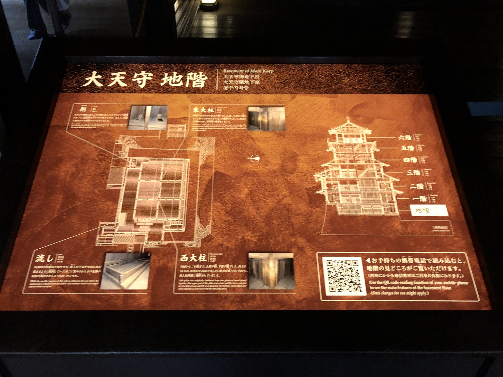

Here are some photos that I took them while I was travelling to Japan few years ago!
This is the Oosakajo (大阪城) in Japan. Please notice that it is highly renovated and modernised, which it has a lift inside of the castle.
It is highly recommended that go to Himejijo (姫路城) if you are interested in visiting Japan old castle!
The Himejijo is not even bigger than the Oosakajo, it also keep how it looks like and feels like serval hundred years ago when you walk inside the castle.
Here is a corridor inside one part in Himejijo, Hyakken roka (the Long Corridor) of West Bailey. You have to take away your shoes to walk inside the historical heritage. So please remember to wear your socks!
Here is the large Door inside the same area. The door served as the entrance to the living quarters of woman, so it was firmly closed every night to provide security.
And, of course, don't forget the most important part of the Himejijo, the Tensyu(天守, meaning the castle, or main keep)!
Yes, again you can walk inside the tensyu, getting up stair from ground floor to sixth floor!
Although it may not be easy to get to the top floor (of course there is no lift), everything will become worth it when you enjoy the incredible view of the city.
Oh and also there is a little jinja (神社, the traditional temple in Japan) in there!
Although during the pandemic, we lose our opportunity to travel the world. But in someday, we certainly can once again visit what ever we hope to without fearing anything. At that day, we may say: Hello World!